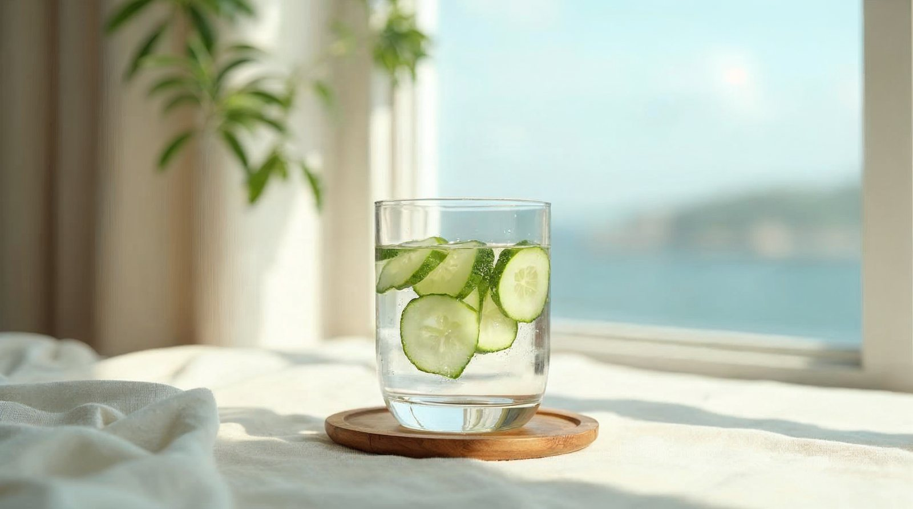
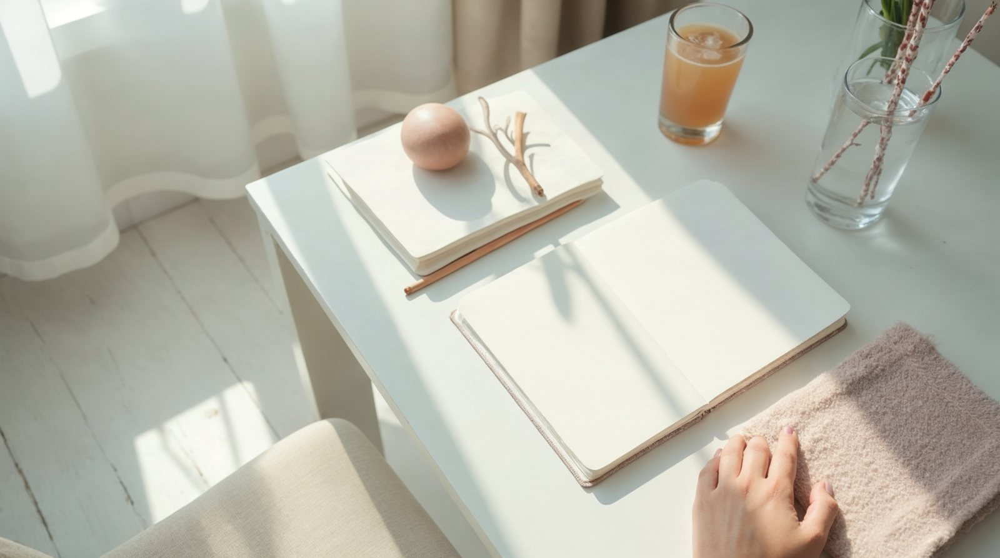
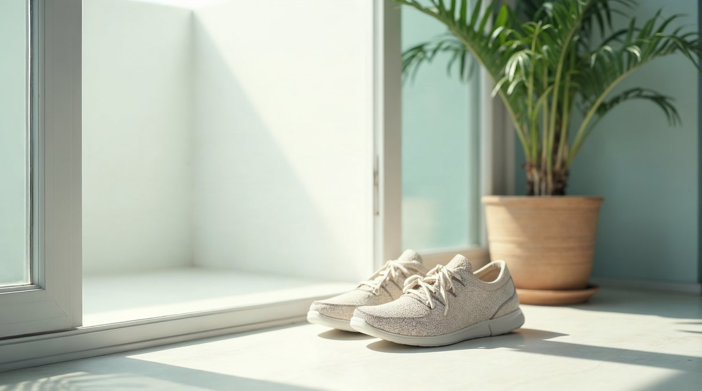
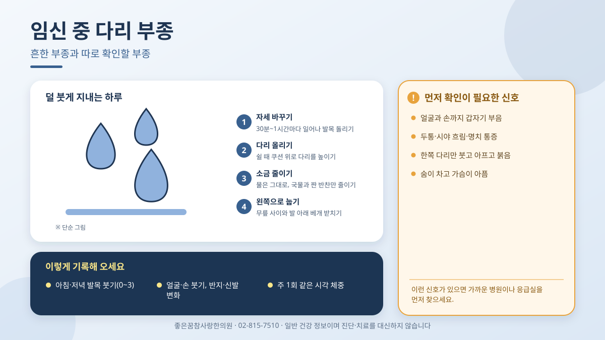

이종호 한의사 감수좋은꿈참사랑한의원 대표원장 (한의사 면허번호 19769)발행 2026-11-26 · 수정 2026-11-26
이 글의 차례
퇴근길 지하철에서 겨우 자리에 앉아 발을 내려다봅니다. 아침에 신고 나온 단화가 발등을 꽉 조이고, 양말을 벗으면 발목에 고무줄 자국이 깊게 패어 있습니다. 손가락으로 정강이를 꾹 눌러 보면 한동안 움푹 들어간 자리가 돌아오지 않습니다. 배가 불러 오는 만큼 다리도 점점 무거워집니다.
임신 중 부종은 진료실에서 정말 자주 듣는 이야기입니다. "이렇게 붓는 게 정상인가요?", "물을 덜 마셔야 하나요?" 하고 조심스럽게 물으십니다. 아기를 품고 있으니 작은 변화 하나에도 마음이 쓰이는 것이 당연합니다.
임신 중 다리 부종은 많은 분이 겪는 흔한 변화입니다. 몸속 물의 양이 늘고, 커진 자궁이 다리에서 올라오는 혈관을 누르기 때문입니다. 다만 붓는 모양이 갑자기 달라지거나 얼굴과 손까지 퍼지면서 두통이 함께 온다면, 혈압과 관련된 변화일 수 있어 산부인과에서 먼저 확인해야 합니다.
이 글에서는 임신 중 부종이 왜 생기는지, 흔한 부종과 따로 확인할 부종을 어떻게 나누는지, 집과 직장에서 덜 붓게 지내는 방법과 한의원에서 함께 살필 수 있는 부분을 정리했습니다.
왜 임신 중에는 다리가 잘 붓나요?
임신하면 아기와 태반에 피를 보내기 위해 몸속 혈액과 수분의 양이 크게 늘어납니다. 늘어난 물의 일부가 혈관 밖 조직으로 스며 나오면서 몸이 붓기 쉬운 상태가 됩니다. 호르몬의 영향으로 혈관 벽이 느슨해지는 것도 붓기를 거듭니다.
임신 중기 이후에는 커진 자궁이 골반 안의 큰 정맥을 누르게 됩니다. 다리에서 심장으로 올라가야 할 피가 천천히 올라가니, 중력을 받는 발목과 종아리에 물이 고이기 쉽습니다. 그래서 오래 서 있거나 앉아 있던 날, 더운 날, 저녁 무렵에 붓기가 가장 심해집니다.
짠 음식을 많이 먹은 날, 잠이 부족한 날, 하루 종일 움직임이 적었던 날에도 붓기가 더 심하다고 말씀하시는 분이 많습니다. 반대로 하룻밤 자고 일어나면 상당 부분 빠지는 것이 흔한 부종의 특징입니다.
한의학에서는 임신 중 붓기를 자종(子腫)이라 하여 오래전부터 살펴 왔습니다. 몸이 물을 돌려 내보내는 힘이 잠시 버거워진 상태로 보고, 소화와 대소변, 손발의 온도, 피로의 정도를 함께 봅니다. 그래서 다리 한 곳만 보기보다 몸 전체의 흐름을 같이 살핍니다.
흔한 부종과 따로 확인할 부종은 어떻게 다른가요?
흔히 겪는 부종
양쪽 발목과 발등, 종아리가 비슷하게 붓고, 저녁에 심했다가 자고 일어나면 줄어듭니다. 다리를 올리고 쉬면 조금 나아지고, 아프거나 붉지 않습니다. 임신 후기로 갈수록 정도가 커질 수 있지만 서서히 변합니다.
혈압과 관련될 수 있는 부종
며칠 사이에 갑자기 심하게 붓거나, 얼굴과 눈두덩, 손까지 퍼져 반지가 안 들어갈 정도가 되며, 두통이나 시야가 흐려지는 느낌, 명치 통증이 함께 온다면 임신중독증이라고도 부르는 전자간증을 의심할 수 있습니다. 이때는 붓기 자체보다 혈압과 소변 검사가 중요하므로 바로 산부인과에 연락하셔야 합니다.
한쪽 다리만 붓는 경우
한쪽 종아리나 허벅지만 눈에 띄게 붓고, 아프고, 붉거나 뜨겁게 느껴진다면 다리의 깊은 정맥에 피가 뭉쳤을 가능성을 생각해야 합니다. 임신 중에는 이런 일이 평소보다 생기기 쉬워 흔한 부종과 따로 나눠 봐야 하고, 산부인과에서 먼저 확인을 받으셔야 합니다.
다른 원인도 함께 봅니다
신장이나 심장, 갑상선 문제로 붓는 경우도 있습니다. 숨이 차서 눕기 힘들거나, 소변이 거품처럼 나오거나, 부기가 아침에도 거의 빠지지 않는다면 산부인과에서 함께 확인해 보시길 권합니다.
스스로 점검해 보세요
해당하는 줄에 표시해 두셨다가 산부인과와 한의원 진료 때 보여 주세요.
- 저녁이면 발목과 발등이 붓고 양말 자국이 깊다
- 자고 일어나면 붓기가 상당 부분 빠진다
- 다리를 올리고 쉬면 조금 편해진다
- 오래 서 있거나 앉아 있던 날 더 붓는다
- 얼굴이나 손도 붓기 시작했다
- 며칠 사이에 체중이 갑자기 많이 늘었다
- 한쪽 다리만 유난히 붓고 아프다
위의 네 줄은 흔한 부종에 가까운 모습이고, 아래 세 줄에 해당한다면 산부인과에 먼저 알려 확인을 받으세요.
먼저 이렇게 여쭙니다
임신 중 부종으로 오신 분께는 대략 이런 순서로 여쭙니다.
- 지금 임신 몇 주이고, 산부인과 다음 진료는 언제인가요?
- 최근 혈압과 소변 검사에서 들은 이야기가 있나요?
- 붓기는 언제 가장 심하고, 아침에는 얼마나 남아 있나요?
- 양쪽이 비슷한가요? 얼굴이나 손도 붓나요?
- 하루에 서 있는 시간, 앉아 있는 시간은 어느 정도인가요?
- 짠 음식이나 국물, 외식은 자주 드시나요?
- 잠과 대소변, 다리 쥐는 어떤가요?
임신 전부터 다리가 잘 붓는 편이었는지, 하지 정맥류가 있었는지도 여쭙니다. 원래 붓기 쉬운 체질이라면 임신 중에 더 일찍, 더 크게 느낄 수 있기 때문입니다.
신발 크기가 바뀌었는지, 반지가 꽉 끼는지도 함께 여쭙니다. 이런 작은 변화가 붓기의 흐름을 알려 주는 좋은 단서가 됩니다. 집에 혈압계가 있다면 최근 숫자도 알려 주세요.

일상에서 먼저 해 볼 수 있는 것
임신 중 부종은 생활 습관을 조금 바꾸는 것만으로도 덜 무겁게 지나가는 경우가 많습니다. 하나씩 골라 시작해 보세요.
- 30분에서 1시간마다 자세를 바꾸고, 앉아 있을 때는 발목을 돌리거나 까치발 들기
- 쉴 때는 다리를 쿠션 위에 올려 심장 쪽으로 조금 높여 두기
- 잘 때는 왼쪽으로 눕고 무릎 사이와 발 아래에 베개 받치기
- 국물과 짠 반찬, 가공식품을 줄이되 물은 줄이지 않기
- 발을 조이지 않는 신발과 고무줄이 느슨한 양말 신기
- 산부인과에서 괜찮다고 하면 임산부용 압박 스타킹 써 보기
물을 덜 마시면 덜 부을 거라고 생각하시는 분이 많은데, 오히려 물이 부족하면 몸이 물을 붙잡아 두려 해서 붓기가 줄지 않을 수 있습니다. 물은 평소처럼 조금씩 자주 드시고, 줄일 것은 소금 쪽이라고 기억해 주세요.
걷기는 다리 근육이 펌프처럼 피를 올려 보내도록 돕습니다. 산부인과에서 특별히 제한하지 않았다면 하루 20분에서 30분 정도 편한 속도로 걸어 보세요. 몸이 무거운 시기에는 실내 수영이나 물속 걷기를 권하는 경우도 있습니다. 물의 압력이 다리를 부드럽게 눌러 주어 한결 가볍다는 분이 많습니다.
직장에 다니는 분이라면 책상 아래에 낮은 발 받침을 두고, 점심시간에 잠깐이라도 다리를 올리고 쉬는 시간을 만들어 보세요. 오래 서서 일한다면 틈틈이 앉아 쉬고, 출퇴근 때는 무리하지 말고 자리를 양보받으셔도 괜찮습니다.
다리를 마사지할 때는 발끝에서 무릎 쪽으로, 아래에서 위로 부드럽게 쓸어 올려 주세요. 세게 주무르거나 아픈 곳을 꾹꾹 누르는 것은 피하시고, 한쪽만 붓고 아프다면 마사지보다 확인이 먼저입니다. 가족이 해 주시면 더 편합니다.
더운 날 찜질방이나 뜨거운 탕에 오래 있으면 혈관이 늘어나 붓기가 심해질 수 있습니다. 샤워는 미지근한 물로 하시고, 마지막에 발과 종아리에만 시원한 물을 잠시 끼얹어 보는 분도 있습니다.

일하는 임신부라면 이렇게 준비해 보세요
사무실에서 일하는 분은 하루 대부분을 의자에 앉아 보내기 쉽습니다. 무릎을 90도로 굽힌 채 오래 앉아 있으면 오금 쪽 혈관이 눌려 종아리에 물이 더 고입니다. 한 시간에 한 번은 일어나 정수기까지 걸어갔다 오고, 앉아 있을 때도 발끝을 들었다 내렸다 하는 동작을 틈틈이 해 보세요.
서서 일하는 분은 한자리에 가만히 서 있는 시간이 가장 힘듭니다. 체중을 양발에 번갈아 옮기거나, 낮은 받침에 한 발씩 번갈아 올려 두면 다리가 덜 무겁습니다. 쉬는 시간에는 앉아서 다리를 조금이라도 올려 두세요.
출퇴근길에는 굽이 낮고 발볼이 넉넉한 신발을 신고, 저녁에 붓는 것을 생각해 반 치수 여유 있는 신발을 하나 마련해 두시면 편합니다. 회사 서랍에 발을 올릴 작은 상자 하나와 편한 실내화를 두는 것만으로도 오후의 다리가 달라졌다는 분이 많습니다.
주변에 임신 사실을 알렸다면 다리가 무거운 날은 잠시 쉬어야 한다고 미리 말해 두세요. 혼자 참으며 버티는 것보다 짧게 자주 쉬는 편이 저녁 붓기를 줄이는 데 도움이 됩니다.
계절과 시기에 따라 달라지는 붓기
여름에는 더위 때문에 혈관이 늘어나 붓기가 훨씬 심해지기 쉽습니다. 시원한 실내에서 쉬는 시간을 늘리고, 땀을 많이 흘린 날에는 물을 조금 더 챙기세요. 겨울에는 움직임이 줄고 따뜻한 바닥에 오래 앉아 있다 보면 다리가 무거워지기 쉽습니다.
임신 초기에는 붓기보다 몸이 무겁고 피곤한 느낌을 많이 말씀하시고, 중기 이후 배가 불러 오면서 발목 붓기가 눈에 띄기 시작합니다. 막달에는 부종이 가장 심해지는 경우가 많고, 출산 뒤 몇 주에 걸쳐 차츰 빠집니다.
한의원에서 함께 살필 수 있는 경우
- 산부인과에서 혈압과 소변 검사로 확인을 받았지만 다리가 붓고 무거워 일상이 불편한 경우
- 붓기와 함께 다리가 저리거나 밤에 쥐가 자주 나는 경우
- 붓기와 함께 허리와 골반이 묵직하고 잠이 얕은 경우
- 소화가 더디고 몸이 무겁게 처지는 경우
좋은꿈참사랑한의원에 오시면 먼저 임신 주수와 산부인과 검사 내용을 확인하고, 아래 '먼저 확인이 필요한' 신호가 없는지부터 봅니다. 그다음 편한 자세로 맥을 짚고 다리의 붓기와 좌우 차이, 잠과 소화, 대소변을 함께 여쭙습니다.
진찰한 내용을 바탕으로 생활에서 바꿔 볼 것 하나와 함께 부드러운 관리, 침, 한약 상담 가운데 지금 주수와 상태에 맞는 것을 정합니다. 임신 중 한약과 침은 먼저 임신 사실을 알리고 산부인과와 상의한 뒤 신중하게 정하며, 임신 중 피해야 할 자리나 강한 자극은 쓰지 않습니다.
필요하다고 판단되면 인바디로 체수분 흐름을 참고하기도 하지만, 임신 중에는 산부인과 검사를 우선합니다.
다시 오시면 지난번 뒤로 붓기가 아침에 얼마나 남았는지, 다리를 올리고 쉰 날과 아닌 날의 차이가 있었는지부터 이어서 여쭙습니다.
이렇게 기록해 오시면 상담이 쉬워집니다
부종은 하루 중 변화가 크기 때문에 기록이 있으면 흐름이 훨씬 잘 보입니다. 휴대폰 메모에 한 줄씩만 남겨 보세요.
- 날짜와 임신 주수
- 아침과 저녁의 발목 붓기 정도(0~3)
- 얼굴이나 손이 부었는지
- 오래 서 있거나 앉아 있던 시간
- 짠 음식이나 외식을 한 날
- 일주일에 한 번 같은 시각에 잰 체중
- 집에서 혈압을 잰다면 그 숫자
아침에 일어나 반지가 잘 빠지는지, 신발이 헐렁한지를 한 줄로 적어 두는 것도 좋은 방법입니다. 이 기록은 산부인과 진료에서도 쓸모가 많습니다. 특히 체중이 갑자기 늘었거나 얼굴과 손까지 붓기 시작한 날은 따로 표시해 두셨다가 바로 알려 주세요.

무거운 다리로 하루를 버티는 분께
집에서 가족이 함께 도울 수 있는 것도 있습니다. 저녁 식사 뒤 설거지를 대신 맡아 주면 그 시간에 다리를 올리고 쉴 수 있고, 잠들기 전 발끝에서 무릎 쪽으로 부드럽게 쓸어 올려 주는 몇 분이 하루의 무거움을 덜어 줍니다. 국물 요리를 줄이고 싱겁게 간하는 것도 온 가족이 함께하면 훨씬 수월합니다.
붓는 다리를 보면 '내가 뭘 잘못했나' 하는 마음이 드실 수 있습니다. 하지만 임신 중 부종은 아기를 키우느라 몸이 크게 일하고 있다는 표시이기도 합니다. 스스로를 탓하기보다 다리를 올리고 쉬는 시간을 당당하게 챙기셨으면 합니다.
이번 주에는 하루 두 번 다리를 올리고 10분 쉬는 것부터 해 보세요. 다음에 오시면 아침 붓기가 어땠는지부터 함께 보겠습니다.
이런 증상은 먼저 확인이 필요합니다
- 며칠 사이 얼굴과 손까지 갑자기 붓고 두통이나 시야 흐림, 명치 통증이 함께 오는 경우
- 한쪽 다리만 붓고 아프며 붉거나, 숨이 차고 가슴이 아픈 경우
이런 신호가 있으면 한의원보다 가까운 병원이나 응급실을 먼저 찾으세요.
함께 읽으면 좋은 글
- 임신 중이거나 임신 가능성이 있을 때는 한의원에 무엇을 알려야 하나요?
- 임신 중 허리와 골반, 치골이 아플 때는 무엇을 살피고 생활은 어떻게 하나요?
- 저녁마다 다리가 붓고 양말 자국이 깊게 남을 때, 부종은 무엇을 나눠 살피나요?
- 임신 중 입덧이 심할 때는 하루를 어떻게 지내고, 한의원에는 무엇을 알려야 하나요?
- 출산 뒤 몸 회복, 관절·땀·잠·기분은 무엇부터 살피나요?

여쭙는 것
- 지금 임신 몇 주이고, 산부인과 다음 진료는 언제인가요?
- 최근 혈압과 소변 검사에서 들은 이야기가 있나요?
- 붓기는 언제 가장 심하고, 아침에는 얼마나 남아 있나요?
생활에서 해 볼 것
- 30분에서 1시간마다 자세를 바꾸고, 앉아 있을 때는 발목을 돌리거나 까치발 들기
- 쉴 때는 다리를 쿠션 위에 올려 심장 쪽으로 조금 높여 두기
- 잘 때는 왼쪽으로 눕고 무릎 사이와 발 아래에 베개 받치기
한의원에서 함께 살필 것
- 산부인과에서 혈압과 소변 검사로 확인을 받았지만 다리가 붓고 무거워 일상이 불편한 경우
- 붓기와 함께 다리가 저리거나 밤에 쥐가 자주 나는 경우
- 붓기와 함께 허리와 골반이 묵직하고 잠이 얕은 경우
먼저 확인이 필요한 신호
- 며칠 사이 얼굴과 손까지 갑자기 붓고 두통이나 시야 흐림, 명치 통증이 함께 오는 경우
- 한쪽 다리만 붓고 아프며 붉거나, 숨이 차고 가슴이 아픈 경우
한눈에 보는 표
| 구분 | 핵심 |
|---|---|
| 여쭙는 것 | 지금 임신 몇 주이고, 산부인과 다음 진료는 언제인가요? 최근 혈압과 소변 검사에서 들은 이야기가 있나요? |
| 생활에서 해 볼 것 | 30분에서 1시간마다 자세를 바꾸고, 앉아 있을 때는 발목을 돌리거나 까치발 들기 쉴 때는 다리를 쿠션 위에 올려 심장 쪽으로 조금 높여 두기 |
| 한의원에서 함께 살필 것 | 산부인과에서 혈압과 소변 검사로 확인을 받았지만 다리가 붓고 무거워 일상이 불편한 경우 붓기와 함께 다리가 저리거나 밤에 쥐가 자주 나는 경우 |
| 먼저 확인이 필요한 신호 | 며칠 사이 얼굴과 손까지 갑자기 붓고 두통이나 시야 흐림, 명치 통증이 함께 오는 경우 한쪽 다리만 붓고 아프며 붉거나, 숨이 차고 가슴이 아픈 경우 |
자주 묻는 질문
임신 중 다리가 붓는 건 정상인가요?
저녁에 양쪽 발목과 종아리가 붓고 자고 나면 줄어드는 부종은 많은 분이 겪는 흔한 변화입니다. 다만 얼굴과 손까지 갑자기 붓거나 두통이 함께 온다면 산부인과에서 먼저 확인하세요.
붓는다고 물을 덜 마셔야 하나요?
물을 줄이면 오히려 몸이 물을 붙잡아 붓기가 줄지 않을 수 있습니다. 물은 평소처럼 조금씩 자주 드시고, 국물과 짠 음식을 줄이는 쪽을 권합니다.
압박 스타킹을 신어도 되나요?
임산부용 압박 스타킹이 도움이 되는 분이 많지만, 사이즈와 착용 방법은 산부인과에 먼저 여쭤 보세요. 한쪽만 붓고 아프다면 스타킹보다 확인이 먼저입니다.
임신 중 붓기에 한약을 먹어도 되나요?
임신 중 한약은 먼저 임신 사실과 주수를 알려 주시고 산부인과와 상의한 뒤, 드시는 약과 영양제를 모두 확인하고 신중하게 정합니다.
출산하면 붓기가 바로 빠지나요?
출산 뒤 며칠은 오히려 더 붓는 분도 있고, 대개 몇 주에 걸쳐 차츰 빠집니다. 출산 뒤에도 한쪽만 붓고 아프다면 병원에 알려 확인을 받으세요.
좋은꿈참사랑한의원은 재진 때 지난번 이야기부터 이어서 여쭙니다. 진료시간과 예약은 오시는 길에서 확인하세요.
어디서 상담받을 수 있나요?
좋은꿈참사랑한의원은 서울 동작구 만양로2길 2 신성빌딩 3층·5층(서울 동작구 상도동, 7호선 상도역 3번 출구 근처)에 있습니다. 한의사 3명(이종호 대표원장, 조영기 수석진료원장, 정원영 진료원장)이 진료합니다. 진료시간은 평일 09:30~20:00(점심 13:00~14:00), 토·일·공휴일 09:30~15:00이며, 방문 전 전화로 확인을 권합니다. 예약은 네이버 예약, 카카오톡 상담, 전화 02-815-7510로 받습니다.
이 글은 일반적인 건강 정보이며 개인의 진단이나 치료를 대신하지 않습니다. 증상이 있거나 복용 중인 약이 있다면 진료를 통해 확인하세요. 치료 효과는 개인마다 다를 수 있습니다.
작성 기준: 일반적으로 알려져 있는 건강 정보를 참고해 정리했습니다(대표원장 감수). 증상 기록은 1~2주 동안 하루 1회, 비슷한 시간에 적어 오시면 지난 상태와 비교하기 쉽습니다.